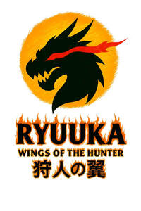

Trade Mark Journal No.2025/049 5 December 2025
UK00004299025 22 November 2025 (25)

- Class 25
- Clothing; Knitwear [clothing]; Jackets [clothing]; Ready-to-wear clothing; Woolen clothing; Furs [clothing]; Garments for protecting clothing; Clothing layettes; Layettes [clothing]; Linen clothing; Headbands [clothing]; Headbands for clothing; Gloves [clothing]; Gloves as clothing; Clothes; Maternity clothing; Jerseys [clothing]; Kerchiefs [clothing]; Denims [clothing]; Shorts [clothing]; Cashmere clothing; Capes (clothing); Oilskins [clothing]; Gabardines [clothing]; Leather clothing; Clothing of leather; Leather (Clothing of -); Silk clothing; Collars [clothing]; Parts of clothing, footwear and headgear; Knitted clothing; Veils [clothing]; Windproof clothing; Hoods [clothing]; Corsets [clothing, foundation garments]; Embroidered clothing; Wristbands [clothing]; Bandeaux [clothing]; Belts [clothing]; Belts for clothing; Waterproof clothing; Rainproof clothing; Casual clothing; Visors [clothing]; Jackets being sports clothing; Jackets (Stuff -) [clothing]; Stuff jackets [clothing]; Bottoms [clothing]; Playsuits [clothing]; Ready-made clothing; Clothing for leisure wear; Latex clothing; Infant clothing; Woven clothing; Trunks being clothing; Leisure clothing; Clothing for sports; Sports clothing; Athletic clothing; Drawers [clothing]; Drawers as clothing; Ties [clothing]; Clothing for children; Muffs [clothing]; Bodies [clothing]; Clothing for babies; Tops [clothing]; Clothing for infants; Clothing for cycling; Weatherproof clothing; Fabric belts [clothing]; Pockets for clothing; Water-resistant clothing; Triathlon clothing; Handwarmers [clothing]; Clothing for skiing; Beach clothing; Thermal clothing; Chaps (clothing); Cowls [clothing]; Men's clothing; Fishing clothing; Dance clothing; Mitts [clothing]; Braces for clothing; Under garments; Under shirts; Head wear; Formal wear; Headgear for wear; Sashes for wear; Breeches for wear; Maternity wear; Rain wear; Exercise wear; Infant wear; Shoes for casual wear; Casual wear; Ladies wear; Evening wear; Swim wear for children; Ski wear; Face masks [fashion wear] ; Surf wear; Bridesmaids wear; Dresses for evening wear; Sports wear; Formal evening wear; Tennis wear; Children's wear; Leisure wear; Korean outer jackets worn over basic garment [Magoja]; Paper hats for wear by nurses; Clothing for wear in judo practices; Paper hats for wear by chefs; Clothing for wear in wrestling games; Shoulder wraps [clothing]; Shoulder wraps for clothing; Swim wear for gentlemen and ladies; Gloves including those made of skin, hide or fur; Weather resistant outer clothing; Leather belts [clothing]; Wraps [clothing]; Braces for clothing [suspenders]; Dress shoes; Braces [suspenders] for clothing / Suspenders [braces] for clothing; Belts made out of cloth; Face mask [clothing] ; Camouflage gloves; Dress pants; Party hats [clothing]; Down garments; Protective metal members for shoes and boots; Dress shirts; Dress shields; Shields (Dress -); Shoulder straps for clothing; Suit coats; Gym shorts; Gym boots; Gym suits; Yoga shoes; Boxing shoes; Jogging pants; Jogging shoes; Jogging outfits; Yoga pants; Yoga shirts; Boxing shorts; Gymwear; Gymnastic shoes; Tennis sweatbands; Clothes for sport; Yoga socks; Clothes for sports; Clothing for gymnastics; Hats; Beanie hats; Toques [hats]; Bobble hats; Fascinator hats; Cloche hats; Mitres [hats]; Fur hats; Woolly hats; Baseball hats; Fashion hats; Miters [hats]; Bucket hats; Baseball caps and hats; Sports caps and hats; Sun hats; Rain hats; Hats (Paper -) [clothing]; Paper hats [clothing]; Top hats; Ski hats; Beach hats; Chefs' hats; Ushankas [fur hats]; Small hats; Fake fur hats; Paper hats for use as clothing items; Bonnets [headwear]; Beanies; Fedoras; Clothing for horse-riding [other than riding hats]; Caps [headwear]; Caps being headwear; Scarves; Sedge hats (suge-gasa); Scarfs; Visors being headwear; Frames (Hat -) [skeletons]; Hat frames [skeletons]; Visors [headwear]; Bandanas [neckerchiefs]; Snoods [scarves]; Visors [hatmaking]; Boas [clothing]; Bandannas; Bandanas; Bonnets; Aprons [clothing]; Head scarves; Headwear; Shawls and headscarves; Headbands; Waistcoats [vests]; Knitted caps; Berets; Caps with visors; Fur coats and jackets; Sweaters; Knitted gloves; Headdresses [veils]; Gloves for apparel; Headgear; Fingerless gloves as clothing; Knit jackets; Sun visors [headwear]; Fur jackets; Kerchiefs; Shirts; Cashmere scarves; Knit shirts; Golf clothing, other than gloves; Fezzes; Shawls; Jumpers [sweaters]; Silk scarves; Shorts; Trousers shorts; Bermuda shorts; Bib shorts; Boxer shorts; Swim shorts; Fleece shorts; Cycling shorts; Sweat shorts; Boy shorts [underwear]; Tennis shorts; Rugby shorts; Walking shorts; Maternity shorts; Golf shorts; Sliding shorts; Board shorts; Leggings [trousers]; Pants; Capri pants; Denim pants; Short trousers; Padded shorts for athletic use; Trousers; Chino pants; American football shorts; Sports shirts with short sleeves; Cycling pants; Long-sleeved shirts; Tank-tops; Jeans; Warm-up pants; Short-sleeved shirts; Babies' pants [underwear]; Briefs [underwear]; Turtleneck shirts; Waterproof pants; Corduroy pants; Short-sleeve shirts; Stretch pants; Sports pants; Sweatpants; Short-sleeved T-shirts; Skorts; Moisture-wicking sports pants; Cargo pants; Bib tights; Sweat pants; Weatherproof pants; Pajama bottoms; Nappy pants [clothing]; Tights; Denim jeans; Sweatshorts; Corduroy shirts; Baselayer bottoms; Waterproof trousers; Camouflage pants; Boardshorts; Corduroy trousers; Tracksuit bottoms; Thong sandals; Men's and women's jackets, coats, trousers, vests; Trunks [underwear]; Trousers for sweating; Snowboard trousers; Underwear; Riding trousers; Sleeved jackets; Pirate pants; Trouser socks; Slacks; Men's underwear; Men's dress socks; Sleeveless jackets; Jogging bottoms [clothing]; Sundresses; Golf trousers; Leather pants; Maternity pants; Denim jackets; Lounge pants; Babies' pants [clothing]; Swim briefs; Horse-riding pants; Polo shirts; Athletic tights; Open-necked shirts; Button-front aloha shirts; Undershirts; Sweat shirts; Jockstraps [underwear]; Sweat-absorbent underwear; Casual trousers; Sleeveless pullovers; Shirts for suits; T-shirts; Tee-shirts; Moisture-wicking sports shirts; Hooded sweat shirts; Shirts and slips; Blue jeans; Snow pants; Tennis shirts; Boxer briefs; Culotte skirts; Tap pants; Mock turtleneck shirts; Vest tops; Casual shirts; Underpants; Ski pants; Collared shirts; Wind pants; Tracksuit tops; Rain trousers; Camouflage shirts; Underwear (Anti-sweat -); Anti-sweat underwear; Trousers of leather; Rugby shirts; Track pants; Sandals and beach shoes; Sleeveless jerseys; Sports shirts; Swimsuits; Shoes for leisurewear; Pantaloons; Gussets for tights [parts of clothing].
Ryuuka Limited